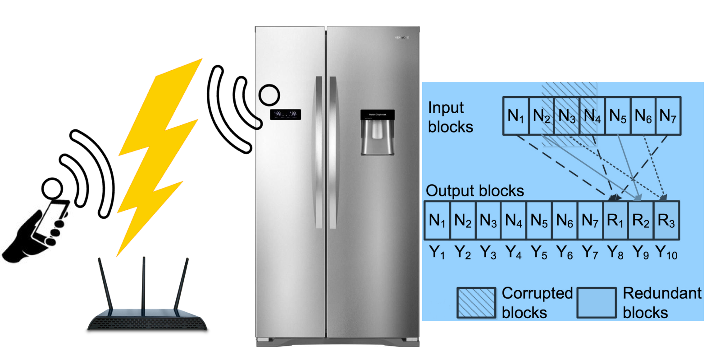
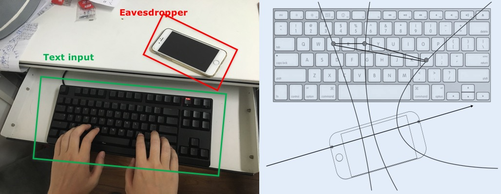
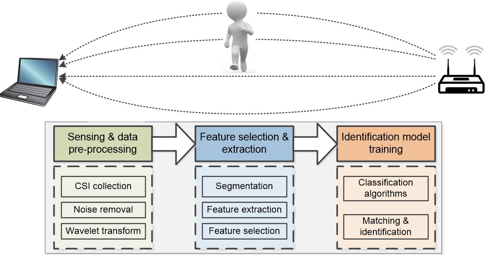
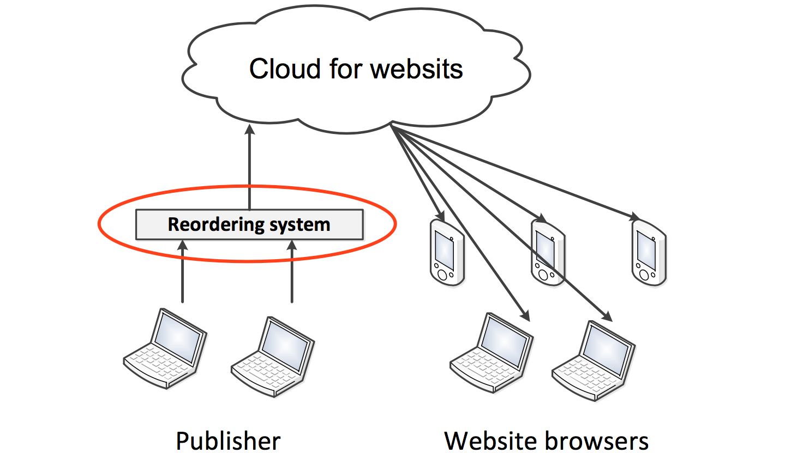
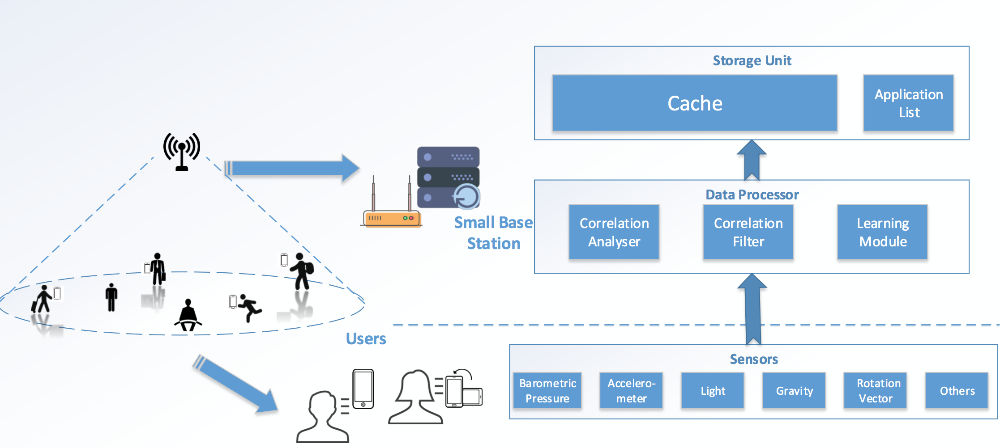

|
ZiXOR: Lightweight network coding for reliable communications in IoT.
Indoor IoT communications (ZigBee, BlueTooth) usually suffer from the inference from WiFi networks. We devise a lightweight yet reliable network coding system for indoor IoT communications, which incurs minimized redundancy and does not require change on the off-the-shelf devices.
The system is implemented with TelosB/TinyOS nodes and significantly improves the reliability for indoor IoT applications.
[youku,youtube][poster][full paper]
|

|
BDTrans: Big data transfer in low power wireless.
The wireless applications are becoming more and more data intensive, leading to massive requirement on big data transfer such as video data, software update, etc.
We devise two general building blocks for big data transfer in LP wireless networks.
1) Accurate sender selection: the most efficient network nodes are selected for data transfer.
2) Fast data transmission protocol: an energy efficient transmission protocol specifically designed for transferring big data.
With the modules, the energy efficiency and transmission reliability are significantly improved.
[poster][full paper]
|

|
PoKeMon: Position free keystroke monitoring.
Smartphones nowadays are highly capable to ''sense'' various real-world
environmental data.
In this project, we use a single smartphone to measure the acoustic signals of the keystrokes from keyboard users,
which in turn are used to recognize the specific tapped keys.
Potential application scenarios include virtual keyboard (you can draw your own keyboard and it works!) and eavesdropping user input.
[poster]
|
|

|
WID: Human detection and recognition using wireless signals.
WiFi signals are everywhere.
Human bodies can interfere the WiFi signals in different patterns due to the different body shapes, gaits and swing.
In this project, we exploit the patterns to identify 1) how many people are there in a space and 2) who they are.
The system is implemented on off-the-shelf devices.
Potential applications include security detection, access control, etc.
|

|
R-Render: Enhancing web QoE with optimized rendering.
Modern websites pose serious challenges to high-QoE web browsing
due to the webpage complexity.
In this project, an optimization proxy is devised,
in which all webpage elements are re-ordered according to their QoE contributions and the used browsers.
As a result, the webpage elements are placed in the best positions
for specific browsers and
the user perceived browsing delay can be minimized.
[full paper]
|

|
User Aware Content Caching for Mobile Edge Computing.
Mobile Edge Computing (MEC) provides storage, access and computing opportunities for resource constrained mobile users.
In this project, we propose a content caching scheme specifically designed for mobile multimedia users.
The mobile users are characterized using the sensory data.
Then the potential interest data are predicted according to our prediction of the user preferences.
|